1The red numbered markers in each screenshot match the numbered steps above it. Example data comes from the FixFleet demo farm, and email addresses are blurred.
Access
Getting started
FixFleet runs in your web browser on a computer, tablet or phone. You don't need to install anything. Your company's admin gives you the web address and your sign-in details.
Sign in
- Type your work email in Email address.
- Type your password in Password. Click the eye icon to check what you typed.
- Click Sign in. FixFleet opens the home page for your role.
- Forgot your password? Click Forgot password?, enter your email, and click Send reset link. Open the link in the email to choose a new password.
- Setting up FixFleet for a new company? Click Sign up (see below).
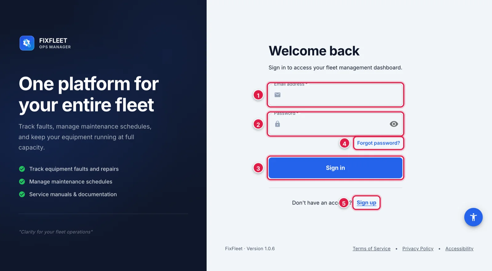
Create a company account
Only the first person from each company does this. That person becomes the company's Admin and adds everyone else.
- Enter your Company name.
- Enter your own name in Admin full name.
- Enter your work Email address.
- Choose a Password.
- Tick the box to agree to the Terms of Service and Privacy Policy.
- Click Create Company Account.
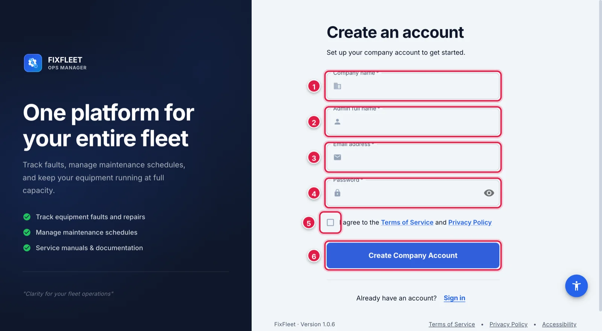
First sign-in: set your own password
When an admin creates your account, they choose a temporary password. The first time you sign in, FixFleet asks you to replace it before you can continue.
- Type a new password in New Password. It must be at least 8 characters.
- Type it again in Confirm New Password.
- Tick the box to agree to the Terms of Service and Privacy Policy.
- Click Set Password & Continue. Your home page opens.
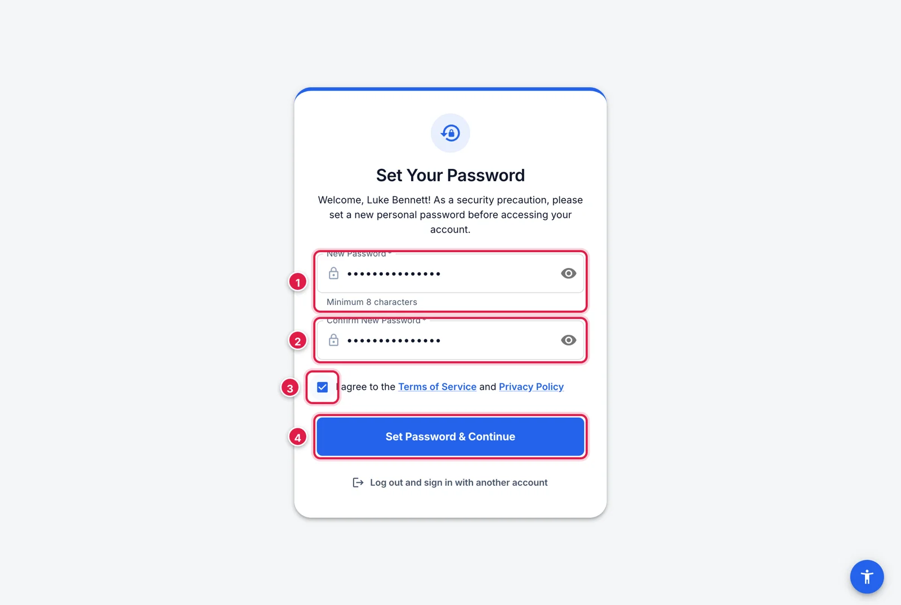
Reference
Roles & permissions
Everyone in FixFleet has one of three roles. Your role decides which pages you see and what you can change. Admins can change anyone's role from the Admin page.
| Task | Operator | Mechanic | Admin |
|---|---|---|---|
| Report a fault, with photos | Yes | Yes | Yes |
| See your own fault reports | Yes | Yes | Yes |
| Read and download manuals | Yes | Yes | Yes |
| See every fault and the fleet dashboard | No | Yes | Yes |
| Browse equipment and its history | No | Yes | Yes |
| Resolve, reopen or delete faults | No | Yes | Yes |
| Create maintenance routines and log services | No | Yes | Yes |
| Upload manuals | No | Yes | Yes |
| Add, edit or delete equipment | No | No | Yes |
| Create users and change roles | No | No | Yes |
| Send announcements | No | No | Yes |
Navigation
Finding your way
Mechanics and admins land on the Dashboard, which gives a live picture of the whole fleet.
- The sidebar takes you to Dashboard, Equipment, Manuals and, for admins, Admin.
- The bell opens your notifications. A number shows how many are unread.
- Your initials open the account menu: settings, activity and log out.
- Report Fault opens the fault form.
- The four summary cards show total faults, active faults, resolved faults and fleet availability (the share of machines with no open fault).
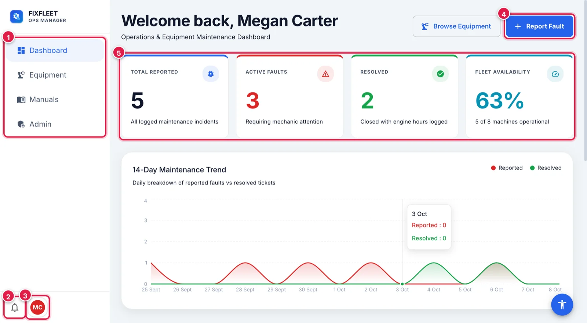
On a phone
On a phone, the sidebar becomes a bar along the bottom of the screen.
- Dashboard and Equipment.
- The round + button reports a fault from any screen.
- Manuals.
- Your initials. A red number here means you have unread notifications.
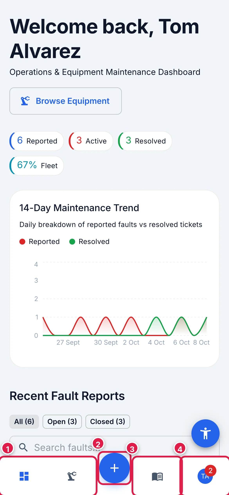
Everyday work
Reporting & resolving faults
A fault is a problem with a machine. It stays Open until a mechanic fixes it and records the engine hours, then it becomes Closed.
Report a fault
Click Report Fault on the dashboard, Report a Fault Now in the operator portal, or the + button on a phone. Then:
- In Select Equipment, pick the machine. Each one is listed with its unit number in brackets, for example
(TELEHANDLER-01). - Enter a short Fault Code your team will recognise, such as
TELE-012. - Enter the machine's current Engine Hours from its hour meter. Use 0 for machines without one, such as a wagon.
- Describe what is wrong in Description: what happens, when, and under what load.
- Optionally add photos. Click Take Photo on a phone, Browse Files on a computer, or drag photos into the box. You can add PNG, JPG or WEBP files up to 10 MB each.
- Click Submit Fault Report.
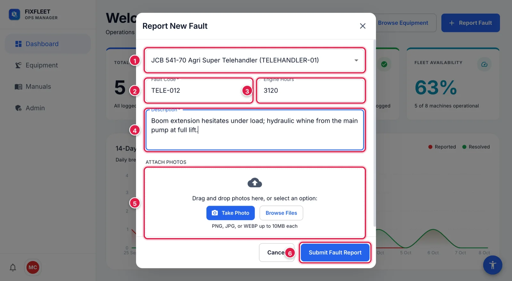
FixFleet confirms with Fault reported successfully. The new fault appears first in the list with an Open badge, and the Open count goes up by one. Every mechanic and admin gets a notification straight away.
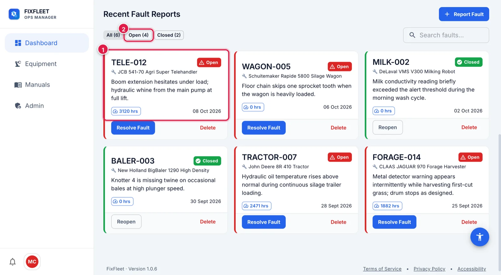
Find and track faults
Scroll down the dashboard to Recent Fault Reports.
- Filter with All, Open or Closed. Each shows how many faults it contains.
- Type in Search faults… to find a fault by code, machine or description.
- Click a fault card to see its full details and photos.
- Resolve Fault closes an open fault (next section).
- Delete removes a fault completely. Only use it for duplicates or mistakes.
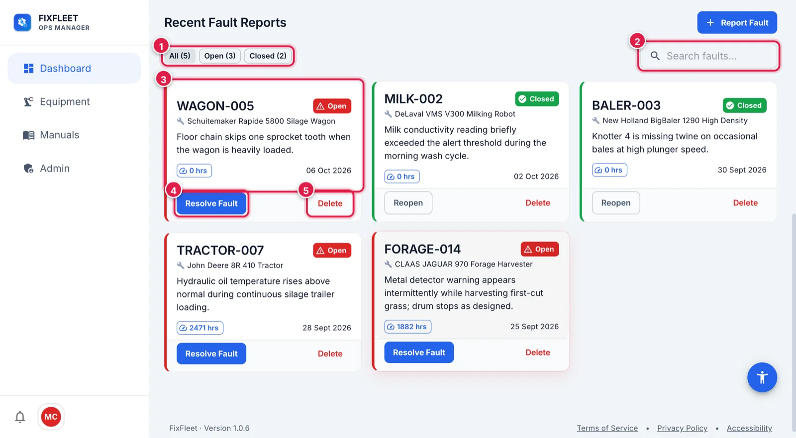
Resolve a fault
Click Resolve Fault on the card. The Close Fault & Update Hours window opens.
- Read the blue note. Closing a fault updates the machine's hour meter, and hours-based maintenance due dates are worked out from that reading.
- Enter the meter reading now, after the repair, in Closing Engine Hours. The box beside it shows the last reading on record.
- In Resolution Notes & Further Information, describe what you did and which parts you used. This is optional, but it builds the machine's history.
- Click Confirm & Resolve.
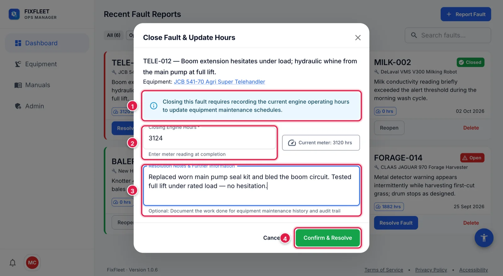
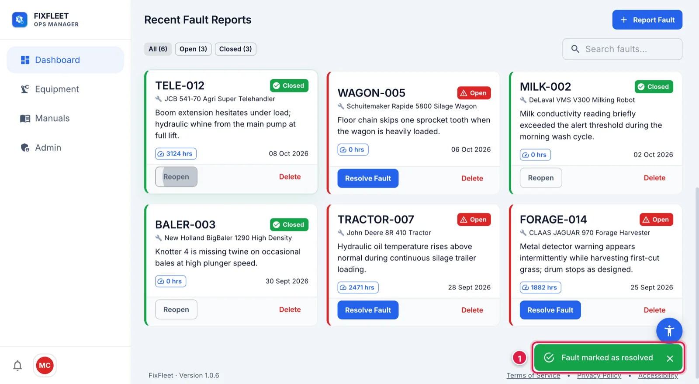
If the problem comes back, click Reopen on the closed card. The fault returns to Open and keeps its history.
Fleet records
Equipment
Click Equipment in the sidebar to see every machine. Cards with a green edge and a Ready badge have no open faults. Red cards show how many open faults they have.
- Add Equipment registers a new machine (admins only).
- Search by name, serial number or model.
- Filter by All, Operational or Needs Attention.
- Switch between the card grid and a compact table.
- Each card shows the unit number, model, serial number and engine hours. The icons at the bottom count maintenance routines and manuals.
- Click Manage to open the machine's page.
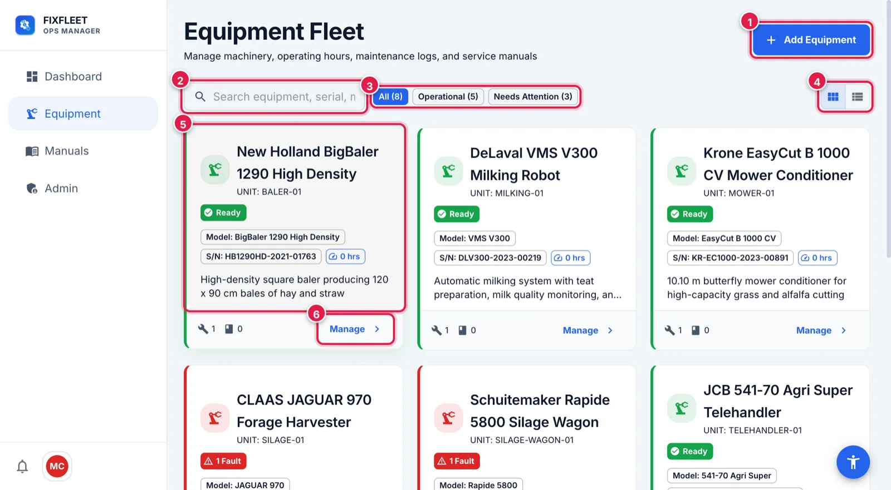
Add a machine
- Name: make and model as people say it, e.g. “Kuhn Venta 3030 Seed Drill”. This is the only required field.
- Serial Number: the manufacturer's serial or VIN from the data plate.
- Local Serial Number: your own unit number, e.g.
DRILL-02. This appears in fault forms and on every card. - Model: the model designation.
- Description: what the machine is and what it's used for.
- Click Create Equipment. FixFleet confirms with “Equipment created successfully”.
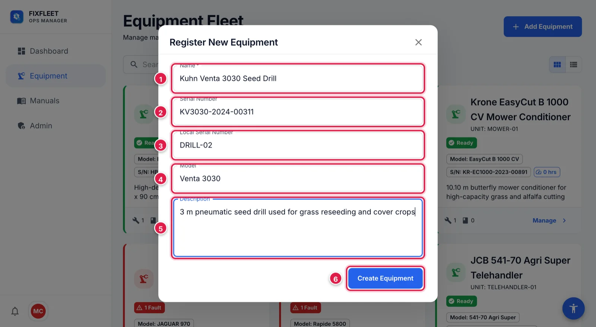
A machine's page
- Back to Fleet Directory returns to the equipment list.
- The header shows the machine's name, model, serial number and current operating hours.
- The tabs hold Reported Faults, Maintenance, and Manuals & Books. Each shows a count.
- Create reports a fault for this machine, with the machine already filled in.
- Each row shows the fault's status, code, photo, hours and date, plus Resolve and Delete.
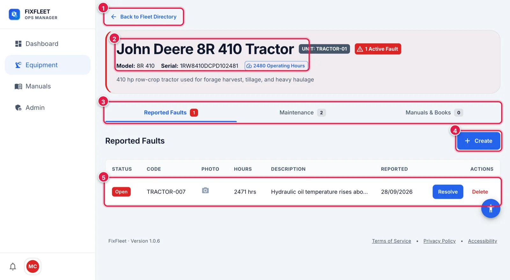
Planned work
Preventive maintenance
A maintenance routine is a service that repeats, such as a 500-hour oil change or a daily pre-harvest check. A routine can repeat every set number of engine hours, every set number of days, or both. FixFleet tracks when each one is next due.
| Badge | Meaning |
|---|---|
| NORMAL (240 hrs left) | Not due yet. The badge shows how long is left. |
| DUE SOON (20 hrs) | Due within the next few hours or days. Plan the work now. |
| In Progress: 3/4 done | Someone has started the checklist but hasn't logged the service yet. |
The Maintenance tab
Open a machine and click the Maintenance tab.
- Current Meter shows the latest engine hours on record.
- Add creates a new routine.
- Each routine card shows how often it repeats, when it was last done, when it's next due, and its checklist. Click a card to open its checklist.
- Complete logs the service straight from the card.
- Service & Maintenance History lists every service carried out on this machine.
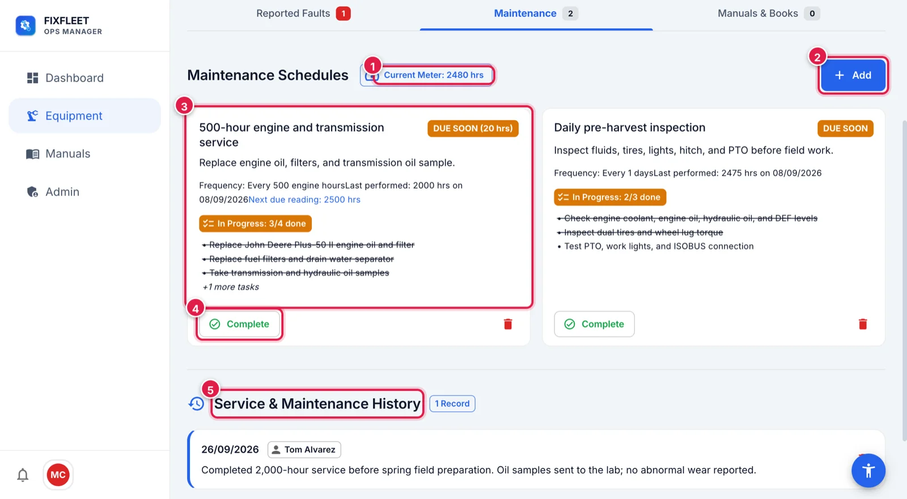
Create a routine
- Routine Title: e.g. “250-hour hydraulic check”.
- Description / Tasks: optional background for whoever does the work.
- Interval (Engine Hours): e.g. 250. Enter 0 if the routine only repeats by date.
- Interval (Calendar Days): e.g. 1 for a daily check. Enter 0 if the routine only repeats by hours.
- Type a checklist task and click Add Task. Repeat for each task.
- Check the task list. Click the bin icon to remove a task.
- Click Add. FixFleet confirms with “Maintenance schedule added”.
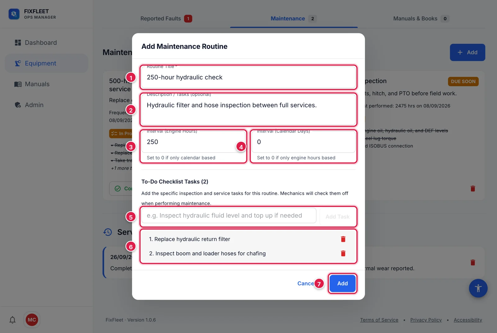
Carry out a service
Click a routine card to open its checklist. Work through it at the machine. FixFleet saves each tick as you go, so you can stop and come back later.
- Tick each task as you finish it. The progress bar fills up.
- Note anything you see in Service Process Notes & Observations, such as wear or fluids topped up.
- Click Save Notes to keep those notes while the job is still in progress.
- When every task is done, click Complete.
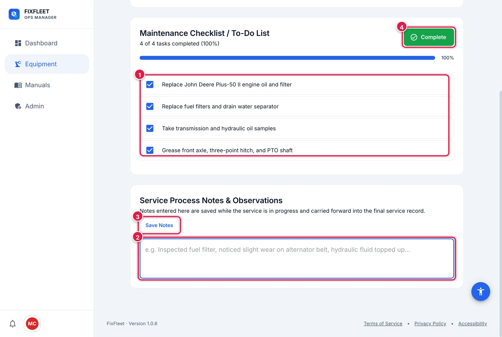
The Log Completed Service window opens:
- Enter the engine hours on the meter now, in Current Engine Hours at Service.
- List the work done and part numbers used in Service Notes / Parts Used.
- Click Complete.
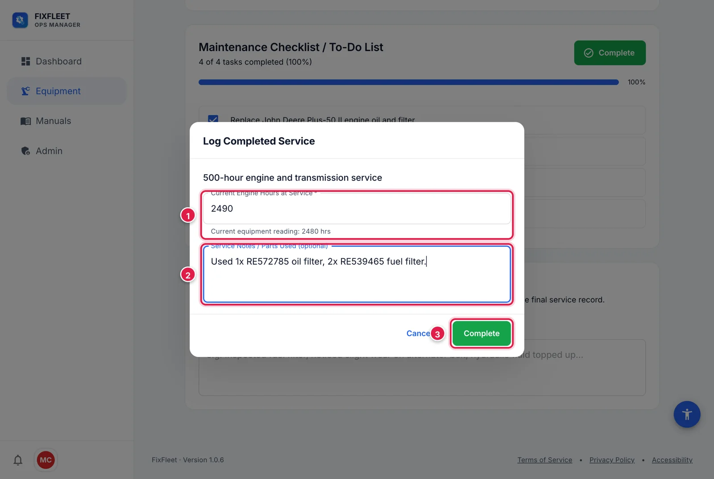
FixFleet shows “Service logged and schedule updated”. The service goes to the top of the machine's history with the date, who did it, the hours and each completed task, and the routine's next due date moves forward.
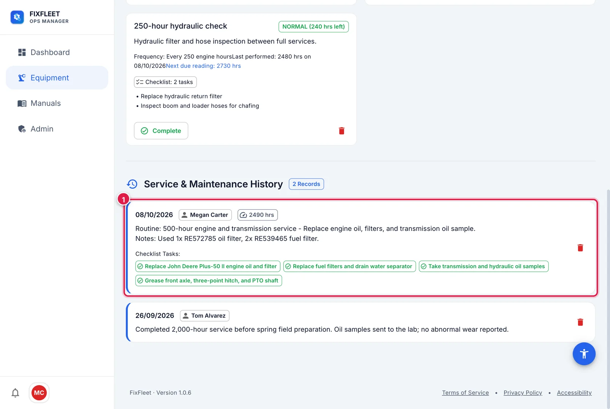
Documentation
Manuals & books
Upload a manual
Open the machine, click the Manuals & Books tab, then click Upload.
- Give it a clear Manual Title, e.g. “8R 410 Operator's Manual”.
- Click Select PDF Document and choose the file. Only PDFs are accepted, up to 50 MB each.
- Click Upload.
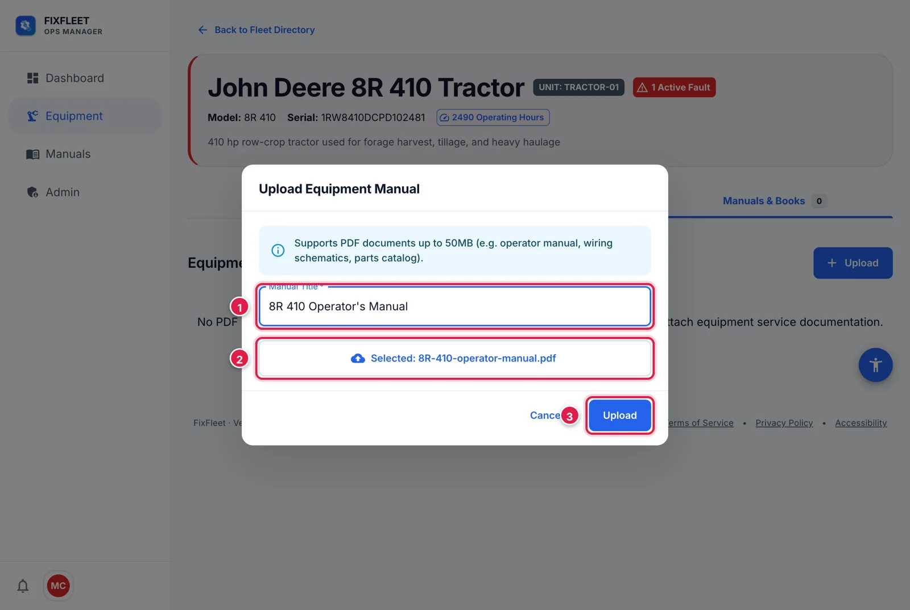
Find a manual
Click Manuals in the sidebar to see every manual in your company, grouped by machine.
- Search by machine name, model, serial number or manual title.
- Each manual shows its title, file size and upload date.
- View opens the PDF in your browser.
- The download arrow saves a copy, which is useful before working somewhere without signal.
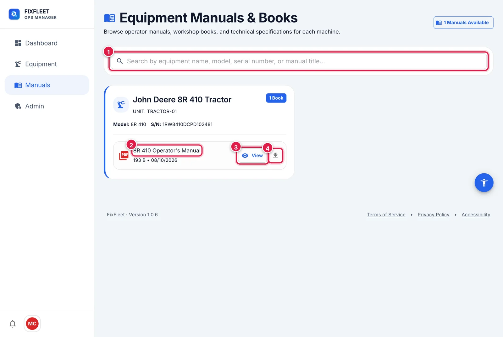
For operators
Operator portal
Operators see a simpler Operator Portal built around one job: telling the workshop when something is wrong.
- The sidebar has Dashboard, My Reports and Manuals.
- Report a Fault Now opens the fault form described in Report a fault.
- View All opens the full list of faults you've reported.
- Your latest reports, each showing whether it is still Open or already Closed.
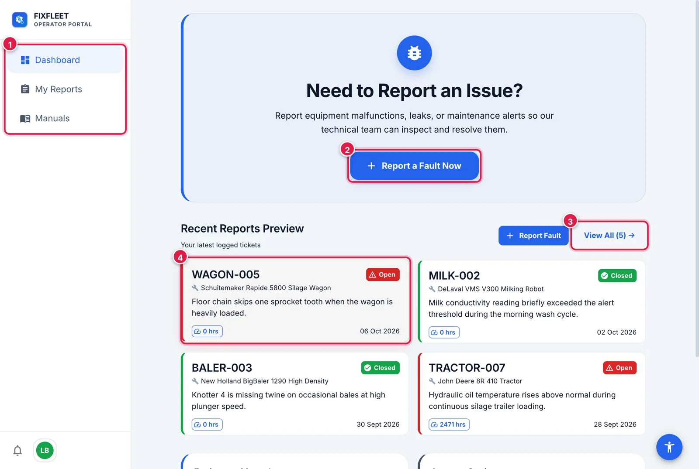
Track your reports
- Report a Fault opens the fault form.
- Filter by All, Open or Resolved.
- Search by code, description or machine.
- Click a report to see its details.
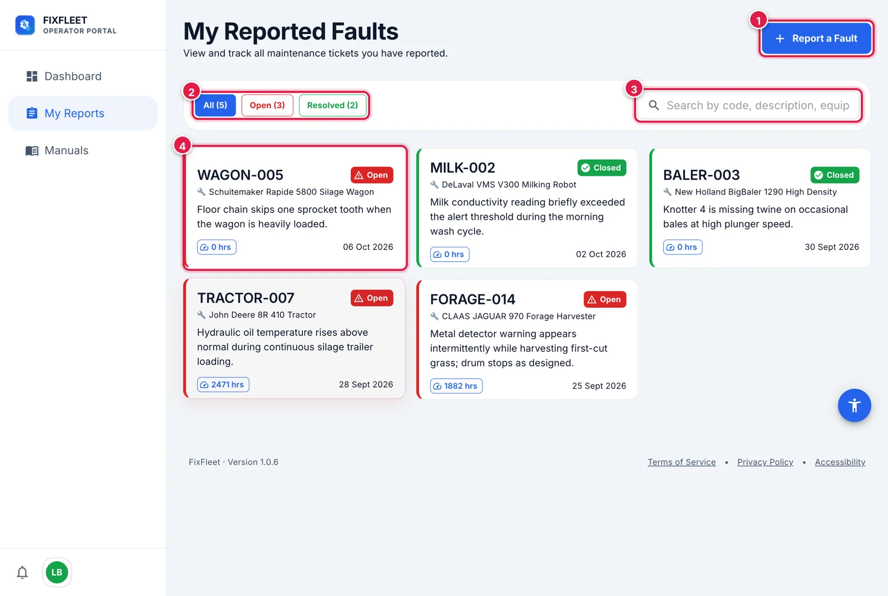
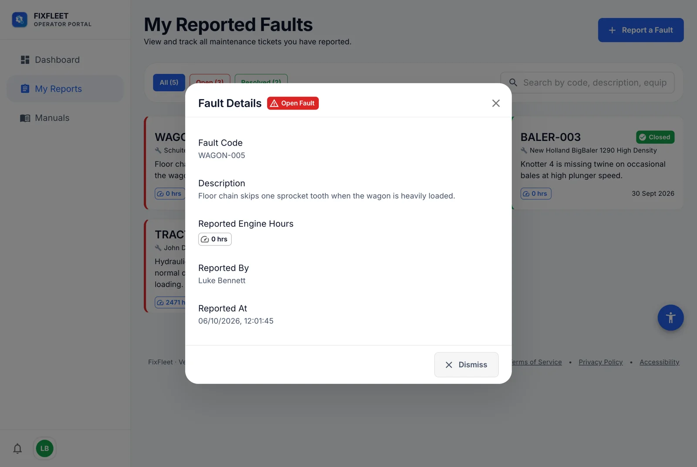
Staying informed
Notifications & announcements
Mechanics and admins are notified as soon as anyone reports a fault. Admins can also send announcements to everyone, or just to mechanics or operators.
Read your notifications
Click the bell at the bottom of the sidebar. On a phone, tap your initials.
- Mark all read clears the unread count.
- Announcements have a megaphone icon and show who sent them.
- New fault alerts name the machine and repeat the report.
- View all notifications opens your full notification history.
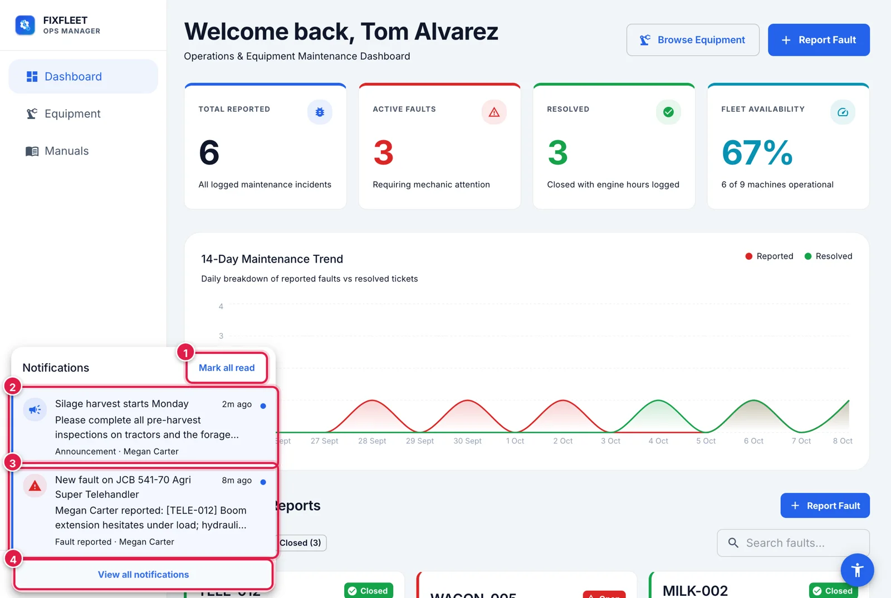
Send an announcement
On the Admin page, click Send Announcement.
- Under Send to, choose Everyone, Mechanics or Operators.
- Write a short Title (up to 120 characters).
- Write the Message (up to 1,000 characters).
- Click Send. FixFleet confirms how many people received it, e.g. “Announcement sent to 1 person”.
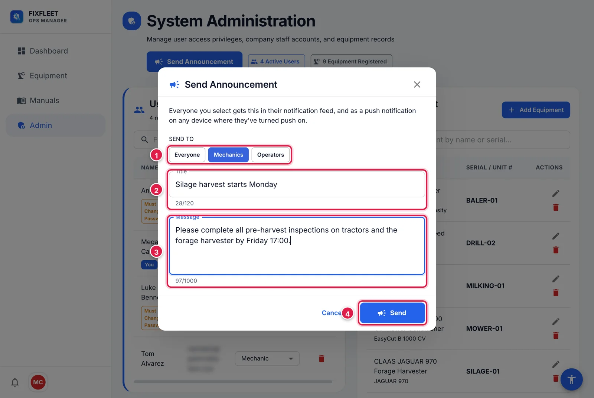
For admins
Administration
Click Admin in the sidebar to manage your team and fleet records.
- Send Announcement (see above).
- Create User adds a new team member.
- Filter users by name or email.
- Use the role menu to change someone between Operator, Mechanic and Admin. The change takes effect immediately.
- The bin icon removes a user. You can't remove yourself here.
- The pencil icon edits a machine's details. The bin icon below it deletes the machine.
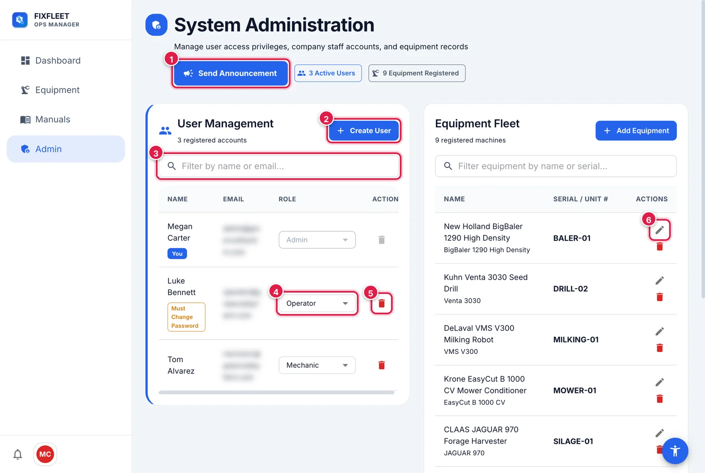
Add a user
- Enter their full Name.
- Enter their work Email. This is what they sign in with.
- Choose a temporary Password. They'll replace it the first time they sign in.
- New accounts start as Operators. Change the role in the user table afterwards if needed.
- Click Create. FixFleet confirms with “User created successfully”.
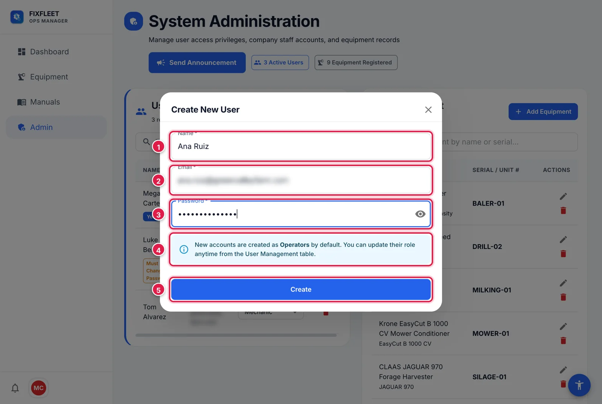
Personal settings
Your account
Click your initials to open the account menu.
- Account Settings: your profile, photo, password, display and notifications.
- My Activity: your own recent activity in FixFleet.
- Log out: always do this on shared computers.
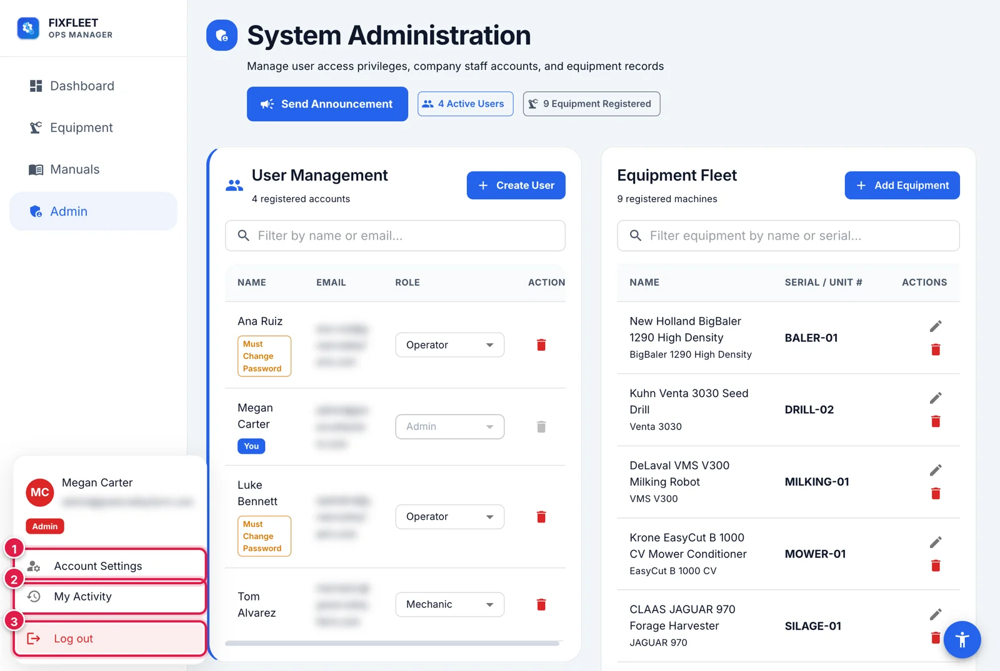
On Account Settings:
- Add a profile photo with Take Photo or Upload Photo. JPG, PNG or GIF files up to 5 MB.
- Update your Full Name or Email Address.
- Click Save Changes.
- To change your password, enter your current password, then the new one twice, and click Update Password.
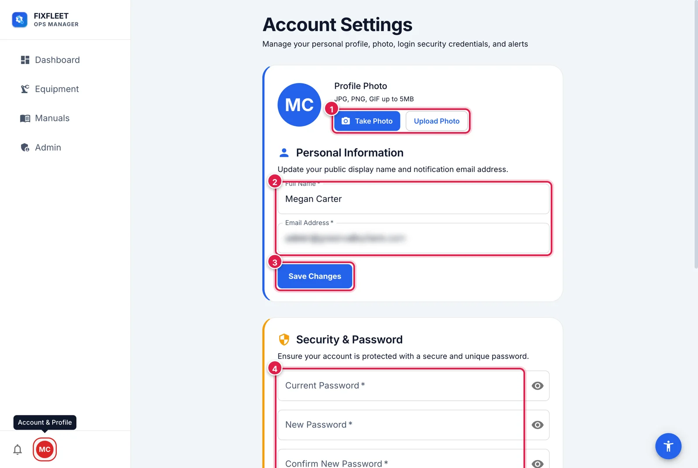
Support
Troubleshooting & FAQ
The page takes a long time to load the first time.
On some hosting plans the server goes to sleep when nobody has used it for a while. The first visit wakes it up, which can take around 30 seconds. After that, pages load normally.
I can't see the Equipment page.
Equipment is for mechanics and admins. Operators see My Reports instead. If you need equipment access, ask an admin to change your role.
There is no Resolve button on a fault.
Only mechanics and admins can resolve faults. If you are a mechanic, check whether the fault is already Closed. Closed faults show Reopen instead.
I typed the wrong engine hours when closing a fault or logging a service.
Enter the correct reading the next time you close a fault or log a service on that machine. Due dates are worked out again from the latest reading. If a due date is badly wrong, tell your admin.
My photo or PDF won't upload.
Fault photos must be PNG, JPG or WEBP files, up to 10 MB each. Manuals must be PDF files up to 50 MB. Profile photos must be JPG, PNG or GIF files up to 5 MB. On a phone, try Browse Files if Take Photo doesn't open the camera.
I'm not getting alerts on my phone.
Push alerts have to be turned on separately on each device, and only if your company has enabled them. Open Account Settings on the phone, turn on notifications, then allow them when the browser asks. Your notifications are always in the bell feed, whether or not push is on.
Sign-in stopped working after several wrong passwords.
FixFleet pauses sign-in after repeated failed attempts. Wait a few minutes before trying again, or use Forgot password? to set a new password.
Can I use FixFleet in dark mode?
Yes. Go to Account Settings → Appearance & Notifications and use the light/dark switch. The setting applies only to the device you're using.